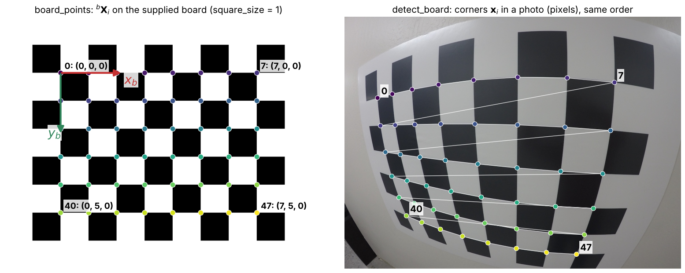

Homework 10: Camera Simulation and Calibration
Total: 5 points
Submission: Gradescope Programming Assignment
Work: Individual
Objective
In Part 1, you will simulate a camera: project 3D world points to pixels using the camera model from the camera geometry lecture. In Part 2, you will calibrate your own camera (e.g., your phone) from photos of a checkerboard, following the OpenCV steps from the camera calibration lecture.
Calibration is graded on carrying out the process correctly. There is no target value for the reprojection error or the camera parameters.
Use the course cv Conda environment. You may adapt the lecture examples. Do not use generative AI to solve this homework.
Starter files
Download hw10_Starter.zip and extract it into one folder. It contains:
| File | Purpose |
|---|---|
| hw10.py | Complete the four functions described below |
| evaluate.py | Check your code and save result images |
| hw10_support.py | Provided photo loading and output checks |
| checkerboard.png | Calibration target to print or display on a monitor |

Keep evaluate.py and hw10_support.py unchanged. You may add helper functions to hw10.py. Use only cv2, numpy, and the Python standard library in hw10.py. Keep computation inside functions, so importing hw10.py does not run anything.
Part 1 — Simulate a camera
Complete this function in hw10.py:
def project_points(X_w, K, R_c_w, t_c_w):
...It projects \(N\) points from the world frame \(w\) to pixels in two steps, as described in Lecture 11.
| Input argument | Shape | Meaning |
|---|---|---|
X_w |
(N, 3) |
World points \({}^{w}\mathbf{X}\), one point per row |
K |
(3, 3) |
Intrinsic matrix \(\mathbf{K}\) (zero skew) |
R_c_w |
(3, 3) |
Rotation \({}^{c}\mathbf{R}_{w}\) from the world frame to the camera frame |
t_c_w |
(3, 1) |
Translation \({}^{c}\mathbf{t}_{w}\) from the world frame to the camera frame |
Output: a NumPy array uv of shape (N, 2). Row i is the pixel \((u, v)\) of point i.
- The camera frame follows the OpenCV convention: \(x_c\) right, \(y_c\) down, \(z_c\) forward.
- \({}^{c}\mathbf{t}_{w}\) is not the camera position \({}^{w}\mathbf{C}\); they are related by \({}^{c}\mathbf{t}_{w} = -\,{}^{c}\mathbf{R}_{w}\,{}^{w}\mathbf{C}\).
- All points are in front of the camera, and there is no lens distortion.
- Do not round or clip
uv, even for points outside the image. - Implement the projection with NumPy. Do not use
cv2.projectPointsin this function. You may use it separately to check your answers.
Public examples
python evaluate.py projection runs six public examples, which are listed in evaluate.py. Unless stated otherwise, they use \(\mathbf{K} = \mathbf{I}\), \({}^{c}\mathbf{R}_{w} = \mathbf{I}\), and \({}^{c}\mathbf{t}_{w} = \mathbf{0}\).
Part 2 — Calibrate your camera
Take your photos
Every student must take their own photos. Copied or shared photos receive zero for the homework. Do not use downloaded images, the lecture images, or several copies of the same photo.
- Prepare the target. Use the supplied checkerboard: it has \(9 \times 7\) squares and \(8 \times 6\) inner corners. Print it and keep the paper flat (e.g., tape it to a book or a wall), or show it on a monitor. Keep the white border around the board. Measure the side length of one square in millimeters and enter it as
SQUARE_SIZE_MMat the top ofhw10.py. If you use a monitor, keep the same zoom for all photos. - Fix the camera settings. Use one camera, one lens, and one resolution, and do not zoom. Hold the phone the same way for every photo (all landscape or all portrait), so all photos have the same width and height. Phone autofocus is fine.
- Take 10–20 photos. Keep the whole board in every photo. Vary the position, distance, and tilt of the board, and place it near the image corners in some photos. Avoid blur and glare. Screenshots are not photos.
- Check them early. Put your photos in a folder named
photos/next tohw10.pyand run the evaluator (see Run and inspect). Retake photos in which the board is not found. At least 10 photos must be detected.
Save your photos as JPEG or PNG at their original resolution. If your phone saves HEIC, export the photos as JPEG. Gradescope limits a submission to 100 MB in total, so 10–15 photos are usually enough. If you are over the limit, save the photos as JPEG with lower quality, keeping the same width and height.
Implement the calibration functions
Complete these three functions in hw10.py. They follow the three steps of the OpenCV calibration example in the lecture.
def board_points(pattern_size, square_size):
...
def detect_board(image, pattern_size):
...
def calibrate_camera(images, pattern_size, square_size):
...The evaluator and the grader call them with pattern_size=(8, 6), i.e., (columns, rows) of inner corners, and square_size=SQUARE_SIZE_MM.
board_points(pattern_size, square_size) returns the 3D corners \({}^{b}\mathbf{X}_i = (X, Y, 0)\) in the board frame \(b\) as a float32 array of shape (columns*rows, 3). Start at \((0, 0, 0)\) and go row by row: \(X\) increases fastest, then \(Y\). Neighboring corners are square_size apart. For example, board_points((3, 2), 1.0) returns the rows \((0,0,0)\), \((1,0,0)\), \((2,0,0)\), \((0,1,0)\), \((1,1,0)\), \((2,1,0)\).
detect_board(image, pattern_size) finds the inner corners \(\mathbf{x}_i\) in a BGR uint8 photo:
- Convert the photo to grayscale. Do not modify the input image.
- Call
cv2.findChessboardCorners. If the board is not found, returnNone. - You must refine the corners with
cv2.cornerSubPixand return the refined corners as OpenCV returns them: afloat32array with one \((x, y)\) pixel coordinate for each of thecolumns*rowscorners, in OpenCV’s order. If you resize the photo for detection, convert the corners back to the input photo’s coordinates.
You choose the detection flags and the refinement window.

board_points((8, 6), 1.0) on the supplied board. Right: detect_board on one of the lecture’s GoPro photos.calibrate_camera(images, pattern_size, square_size) calibrates the camera from all photos:
- Get the board points with your
board_points. - Loop over the photos with
for image in images:. Call yourdetect_boardon each photo and skip it if the result isNone. Otherwise, append the board points toobj_pointsand the corners toimg_points. - Call
cv2.calibrateCamera(obj_points, img_points, image_size, None, None), whereimage_sizeis(width, height)of the photos. Note the order: NumPy’simage.shapeis(height, width, 3). - Return the five outputs of
cv2.calibrateCameraunchanged:rms, K, dist, rvecs, tvecs.
images behaves like a list of BGR uint8 photos of the same size. The provided loader reads each photo from disk only when your loop reaches it, so keep only the corners, not the photos.
The outputs are the same as in the lecture. Pose \(j\) belongs to the \(j\)-th detected photo, in the input order:
| Output | Meaning |
|---|---|
rms |
RMS reprojection error (pixels) |
K |
Intrinsic matrix \(\mathbf{K}\): \(f_x\), \(f_y\), \(c_x\), \(c_y\) |
dist |
Distortion \(\mathbf{d} = (k_1, k_2, p_1, p_2, k_3)\) |
rvecs[j] |
Rotation \({}^{c}\mathbf{R}_{b_j}\) of view \(j\) (axis–angle) |
tvecs[j] |
Translation \({}^{c}\mathbf{t}_{b_j}\) of view \(j\) (mm) |
The required OpenCV functions must actually produce your result; calls whose outputs are not used do not satisfy the requirement. Do not return stored or guessed parameters, and do not read files inside your functions.
Run and inspect
From the extracted starter folder:
conda activate cv
python evaluate.py projection
python evaluate.py calibration photosThe first command runs the public projection examples. The second command runs your code on the photos in photos/:
- It prints which photos are detected (
FOUNDorNOT FOUND), then the RMS error, \(\mathbf{K}\), the distortion coefficients, and the reprojection error of each view. - It saves
results/calibration/overview.jpg, with the detected corners drawn on every photo, andresults/calibration/undistorted.jpg, which compares one photo before and after undistortion.
The results are for checking your work only; do not submit them. Your values of \(\mathbf{K}\) and \(\mathbf{d}\) will be different, because you are calibrating a different camera.
Tests and grading
| Test | Points |
|---|---|
project_points: public and private projection cases |
2 |
board_points: point order and spacing |
0.5 |
detect_board: corners on test images, and None when there is no board |
1 |
calibrate_camera: calibration from your photos |
1.5 |
| Total | 5 |
- Projection: private cases vary the points, intrinsics, rotations, and translations, with partial credit for each case. Pixel coordinates are compared with a tolerance of \(10^{-4}\) pixels.
- Detection: your refined corners are compared with OpenCV’s, in the same order, with a tolerance that allows different detection flags and refinement windows.
- Calibration: the grader runs your
calibrate_cameraon your submitted photos. At least 10 photos must be detected, and there must be one board pose per detected photo, in order. Your outputs must agree with OpenCV’s calibration from your detected corners. We do not grade the RMS reprojection error or \(\mathbf{K}\) of your camera.
After each submission, Gradescope shows the full results of the public tests and the number of private tests passed (e.g., 2 of 5 private tests passed). Private test details are released after the late deadline, one week after the due date.
Submission
Submit hw10.py and your 10–20 JPEG/PNG photos. On Gradescope, choose Upload and drag in hw10.py together with all your photos, or upload one ZIP file that contains hw10.py and your photos/ folder. Do not submit the evaluator, support file, checkerboard, or results. The total upload must be smaller than 100 MB.
You have five Gradescope submissions. Submissions 6 and later receive zero for that submission; earlier submissions remain unchanged. Gradescope autograder failures do not count, while errors in your code do.
The regular course late policy allows submission for one additional week, with a 20% penalty. Work submitted after that period receives zero. The autograder reports the raw score before any late penalty.